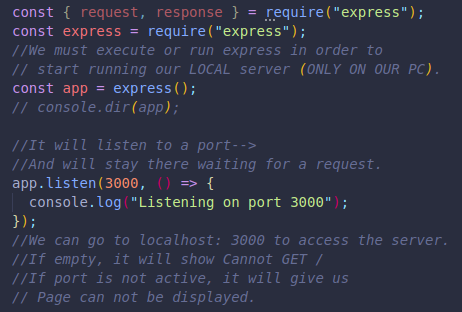
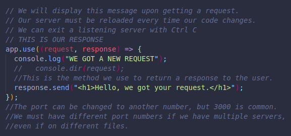
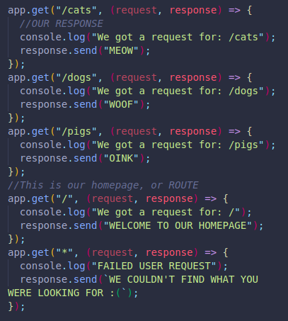

It helps with the requests made from the user. It checks and saves things into our database, and then executes our response.
It:
It starts up a server to listen for requests.
Parse incoming requests.
Match those requests to a certain route.
It is an NPM package that comes with methods and optional plugins we can use to build web applications and API's.
The difference is that a library can be integrated to our code, and we decide when to use it. A framework typically switch the control, it provides the structure, and we only participate with our code.
There's less freedom and flexibility with frameworks.
Express is a framework, lightweight and right in the middle.
Some of them require us to give up a lot of control, as far as how we name our files, etc.
We must import express first.
Then save it to a variable, and make another variable for the executed function itself.
Finally we can use listen() to start the server, this is where we include our port number.
When a user makes a request to our server, we will automatically get an object with all the request information.
Example:
If user requests 3000/dogs, the object will have a key for our path and a value of /dogs.
When we use an API that requires a header, it will show on a key called headers and show the value.
We can call this argument object res or request for clarity.
Now we can use a method called req.send() to return something to the user each time we receive a request.
We can use an API tool to see the response when entering our server's address and using GET.
Using an API tool will also log a request to our server.
We can return strings, HTML tagged content, objects, etc in quotes.
This is how we use different responses to different requests.
We match a code as a response based on the specific request.
This method takes 2 arguments, a path request and a function where we use our request and response objects.
We can assign each of our websites to one of these methods, to match the request with the relevant path.
(WE WON'T GET ANYTHING THROUGH AN API TOOL IF WE TRY WITH POST INSTEAD OF GET, UNLESS WE ASSIGN A RESPONSE TO app.post(). THIS WILL BE DIFFERENT THAN GET, EACH TYPE OF REQUEST WILL WORK INDEPENDENTLY FROM THE OTHERS. IF NOTHING IS ASSIGNED TO A PARTICULAR TYPE OF REQUEST, THE USER WILL SIMPLY GET AN ERROR.)
There are many types of requests like post, put, delete, etc.
We can set a default response if nothing matches the user's request with the star symbol:
app.get( "*", (request, response) => `WE COULDN'T FIND WHAT YOU WERE LOOKING FOR :(` );
*WE MUST MAKE SURE TO PUT THIS CODE AFTER ALL OTHER REQUESTS, SINCE WE CAN ONLY RETURN 1 RESPONSE AT A TIME, AND SINCE THIS CATCHES ALL REQUESTS, IT WOULD RETURN EVERY TIME!
